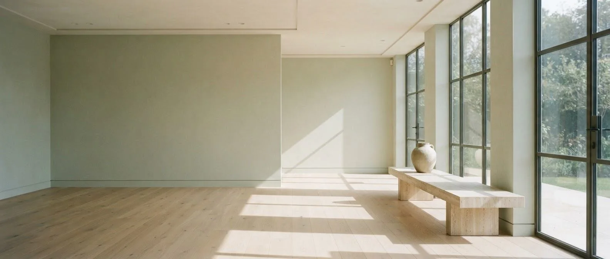
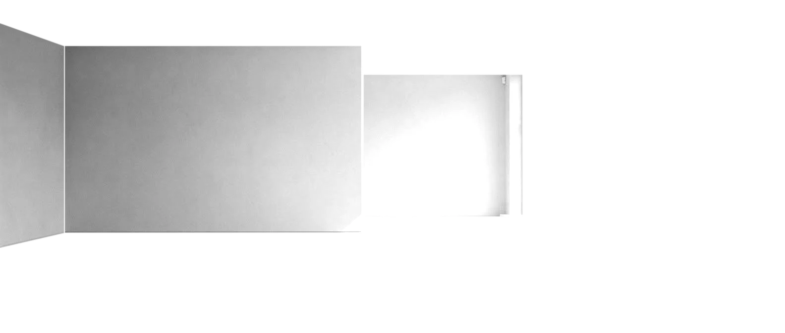

Колерування фарби за 15 хвилин
Колеруємо ПФ-фарби, емалі та шпаклівку в будь-який колір із палітр, що є в магазині. Від 1 кг, за 15 хвилин.
Оберіть палітру


Приміряйте відтінок
Оберіть гаму на смужці й натисніть на зразок: стіни в кімнаті перефарбуються. Відтінок можна знайти за кодом або назвою.
Зразки на сторінці — частина кожної палітри; повне віяло є в магазині. Заколерований товар повернути не можна.
Як це працює
- Надішліть фото або код
Відтінок із палітри вище, код кольору, зразок або посилання на Pinterest - Підберемо базу й відтінок
Скажемо, яка фарба, емаль чи шпаклівка підійде під ваш колір - Зробимо пробний зразок
У магазині ви побачите колір наживо, до колерування всього об’єму - Заколеруємо й видамо
За 15 хвилин. Рецепт зберігаємо: докупите той самий колір
Що колеруємо
Які бази колеруються в кожну палітру, уточнює магазинПФ-фарби та емаліДля металу, дерева й фасадних елементів
ШпаклівкаГотова акрилова, під фарбування і як фінішне покриття